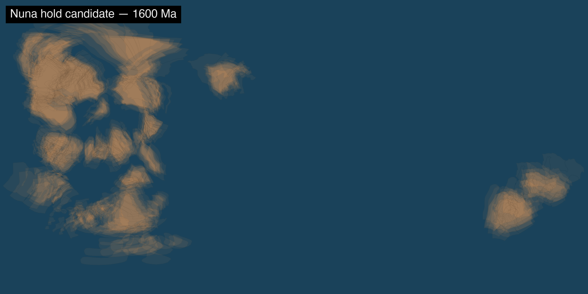
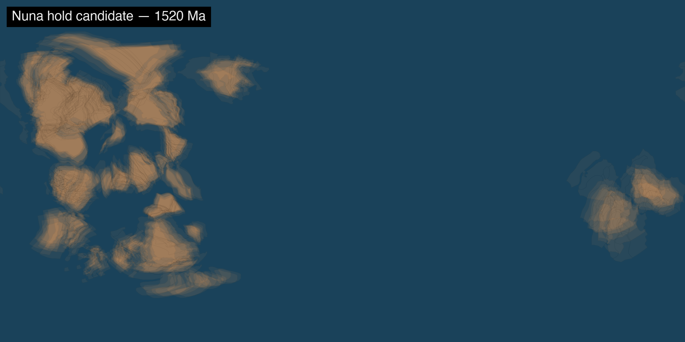
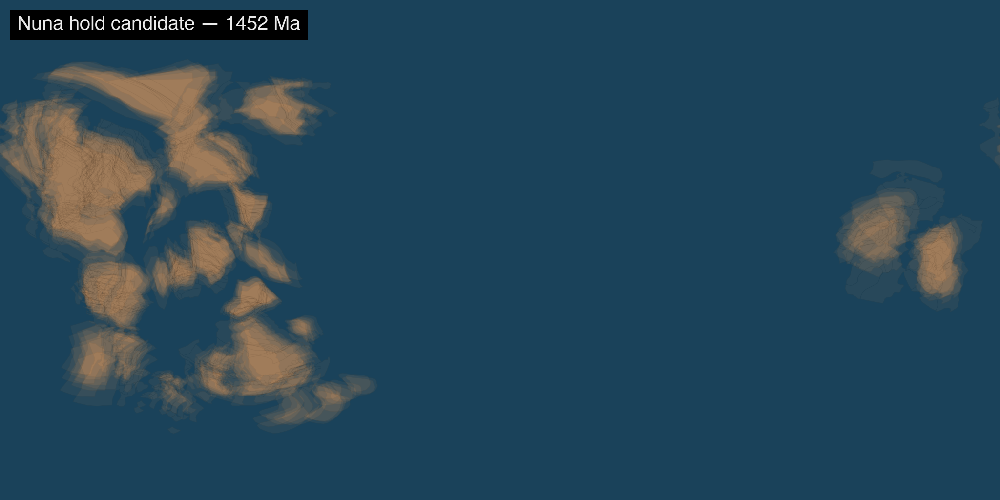

Unlisted review page (noindex). Updated 2026-07-29 by Tessera.
1 · Flat-v7 lens-arc draft
48 s · four holds, four lenses: sinusoidal → S-polar azimuthal → Mollweide → orthographic.
Draft res; ortho-limb speckle disappears at production density.
Call: does the arc play?
2 · Boil vs coherent (decided: coherent)
5 s · same window, stacked. xian 7/29: “smooth is better.” Kept here for the record.
3 · Prequel full span, flipbook cut
20 s · 1800 → 1000 Ma, 4 Ma cadence, coherent members. Overview speed.
4 · Prequel full span, tempo-matched cut
80 s · same frames at the main film's ~10 Ma/s.
Call: does the raw timeline breathe right at 80 s, or compress?
5 · Nuna hold candidates
Call: which moment gets the hold? Tessera's pick: 1452 Ma (peak consolidation).
1600 Ma — mid-assembly, still gathering

1520 Ma

1452 Ma — peak consolidation (Tessera's pick)

6 · Ensemble strip (confirmed 7/28)
The uncertainty treatment, 1800 → 1000 Ma. xian: “pretty much what I envisioned.”